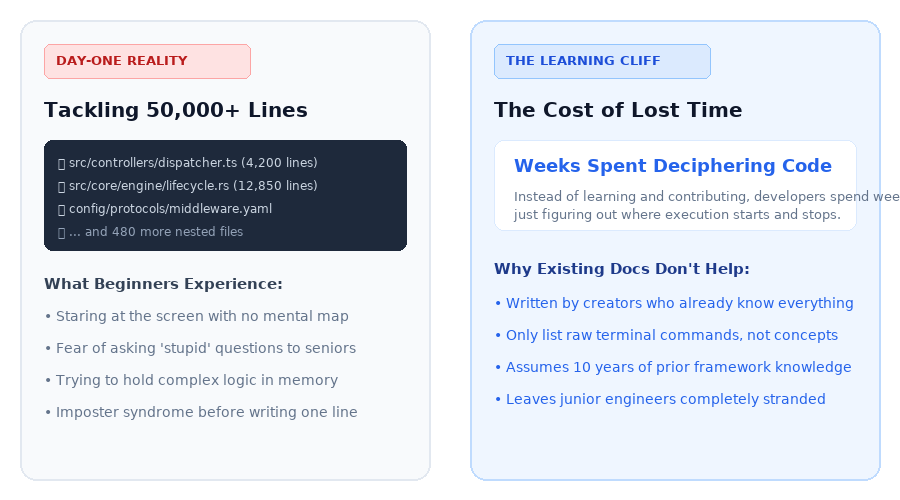
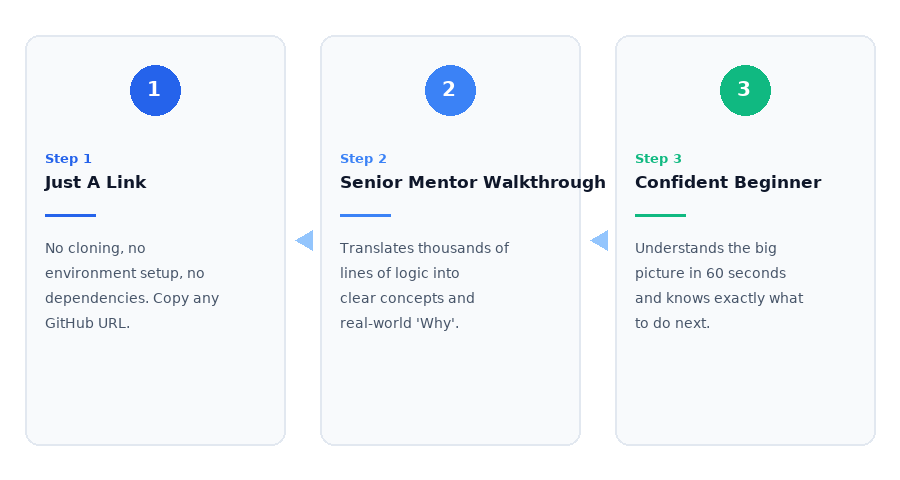
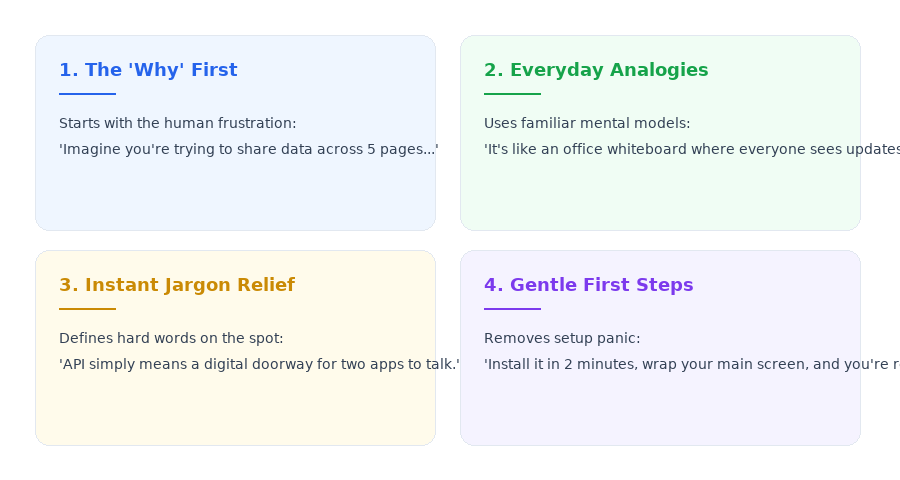
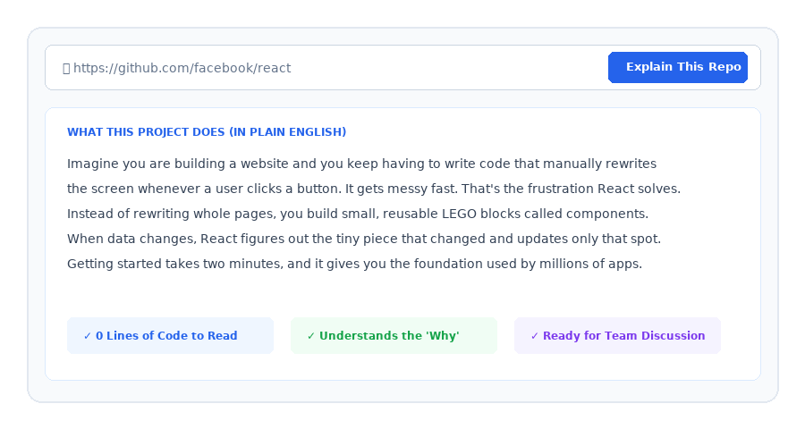

GitHub Repo Explainer
A friendly, everyday guide that turns complex open-source software projects into clear, conversational English anyone can understand.
Think of it like having an experienced, patient friend sitting right beside you, explaining what a codebase does without intimidating words.
No accounts to create, no software to install, and no environment setup. Just paste any GitHub repository link and click one button.
Powered by multiple smart helpers behind the scenes. If one helper is busy or down, another steps in instantly so you never see an error.
The Day-One Shock: Walking Into a Massive Codebase Blind
When junior engineers and beginners get into open source or join a new company, they are suddenly handed thousands of lines of unfamiliar logic with no guided tour.

- • Overwhelming volume: Handed 50,000+ lines of code across hundreds of files on day one.
- • No starting map: You don't know which files matter, where logic begins, or why decisions were made.
- • Hesitation to bother seniors: Beginners fear asking "stupid" questions every ten minutes.
- • The Result: Days turn into weeks of staring at screens instead of building confidence.
The Solution: An On-Demand Senior Mentor in Your Browser
Instead of suffering in silence or digging through dense files, junior developers get a patient companion whose only job is to explain any project clearly.

The Concept: How It Translates Code into Human Concepts
Rather than spitting out code line-by-line, the explainer focuses on human mental models, everyday analogies, and the "why" behind the software.

The Experience: From Total Confusion to Confident in 60 Seconds
What the user actually sees: a cohesive, 5-paragraph narrative walkthrough that leaves them ready to contribute and discuss with their team.
